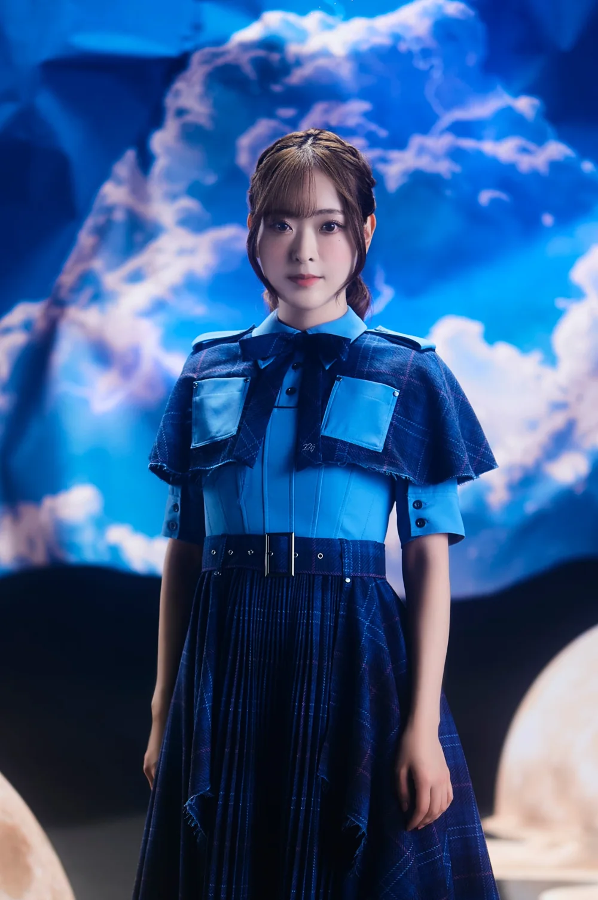

02 Kagane『ARE YOU THERE?』英語ボイスを天城サリーさんに担当いただきました！Sally Amaki voices the English version of 02 Kagane “ARE YOU THERE?”!

GameArtPRJ『CÔGEIMU』の新作、02 Kagane『ARE YOU THERE?』。 02 Kagane “ARE YOU THERE?” is the new work from GameArtPRJ “CÔGEIMU”.
本作では、海外の方にもカガネとの“対話”を楽しんでいただけるよう、日本語だけでなく英語ボイスも制作しています。 So that people outside Japan can enjoy the “dialogue” with Kagane too, we have made an English voice as well as the Japanese one.
そして今回、その英語ボイスを天城サリーさんに担当いただきました！ And that English voice has been performed by Sally Amaki!

英語で話すカガネを考える中で、いろいろな方のお声を聴かせていただいたのですが、天城さんのお声を聴いたときに、
「ぜひこの方にお願いしたい！」
と思い、オファーさせていただきました。
While imagining Kagane speaking English, we listened to many voices. When we heard Amaki’s voice, we thought,
“This is the person we want to ask!”
and made her an offer.
ネイティブな英語はもちろん、明るく天真爛漫なカガネの可愛らしさや、ゲーム中のさまざまなリアクションまで、とても感情豊かに演じていただいています。
実際に収録したボイスをゲームに組み込んでみても、英語で話すカガネをとても自然に、魅力的に仕上げていただきました。
Beyond her native English, she brings great feeling to everything from the charm of bright, innocent Kagane to the many reactions during the game.
Once we built the recorded lines into the game, Kagane speaking English came across as wonderfully natural and appealing.
今回の『ARE YOU THERE?』は、銅でできた少女の瞳を覗き、頬に触れ、声を聞きながら、一緒にゲームを遊ぶという少し変わった作品です。
通常のゲームとはかなり異なる作品ではありますが、作品やカガネのことも知っていただきながら、この少し変わった体験の中にいるカガネを、とても素敵に演じていただきました。
“ARE YOU THERE?” is a slightly unusual work: you look into the eyes of a girl made of copper, touch her cheeks and listen to her voice as you play a game together.
It is quite different from an ordinary game, but she took the time to get to know the work and Kagane, and gave a lovely performance of Kagane within this slightly unusual experience.
英語で話すカガネも、ぜひ楽しみにしていただけたら嬉しいです！ We hope you’ll look forward to Kagane speaking English, too!
フランスでの初展示についてThe first exhibition, in France
『ARE YOU THERE?』は、2026年10月10日よりフランス・アルルで開催される「Anima Ludens」にて初展示を迎えます。 “ARE YOU THERE?” will be shown for the first time at “Anima Ludens”, opening on 10 October 2026 in Arles, France.
まずはフランスからのお披露目となりますが、今後は日本はもちろん、さまざまな国の方にも実際にカガネと出会い、一緒に遊んでいただける機会をつくっていきたいと考えています。 Its debut will be in France first, but from here we want to create chances for people in Japan, of course, and in many other countries to actually meet Kagane and play with her.
色々と計画を進めていますので、こちらはもう少々お待ちください！ We have various plans in the works, so please wait just a little longer!